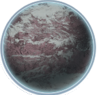
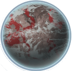
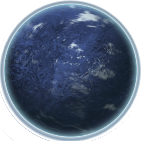

Sacyt

If you have read up on Anian Prime from the Lacitya system, you'll be very familiar with the type of world that Sacyt is. Blistering hot with storms that will make a volcano sweat. Similarly, it is homme to only a few flora and fauna as you'll see below. Rock collectors will be quite happy here as the volcanic activity provides for all sizes and variants they could wish for.
Geistole

Make sure to bring your umbrella and geiger counter when visiting Geistole. The planet is prone to raining down ocassional bursts of radiation to anything not shielded or stuck behind a good chunk of lead. I'm pretty sure the radiation fried the circuits within the sentinels as well, because they are sporadic and often end up going on frenzies. Despite those deterents, the planet is quite a nice place to visit. The colors are lush and the fauna is interesting.
Awleyaw

Cold summers and even colder winters is the best way to describe this planet. Great location if looking to host the winter olympics, but don't stay too long or you'll soon find yourself buried in snow. Blizzards don't roll around too often which is nice. The fauna here is passive enough. I think they're just stuck in some sort of perpetual half-hibernation. And if you do eventually tire of the same old below zero temperature, its just a hop and a skip away to Sacyt where you can quickly warm up.